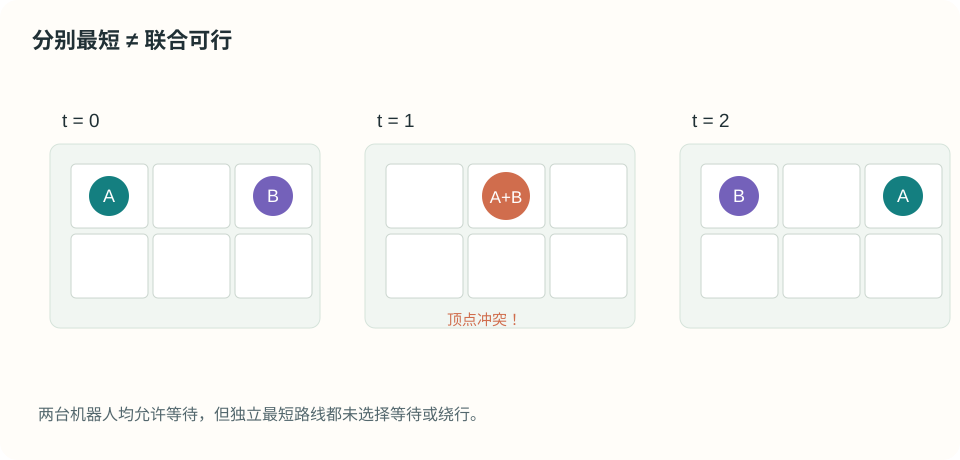
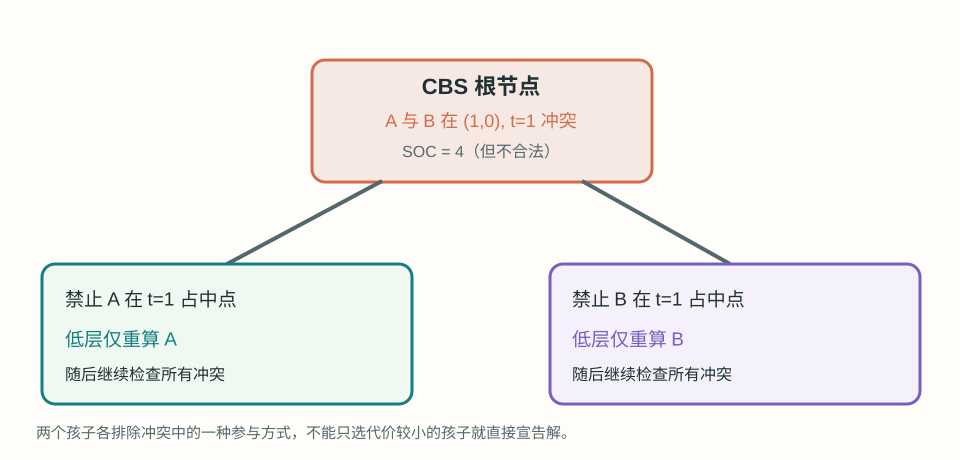

多机器人协调：两条最短路为什么会互相阻挡？
从同步时空冲突理解 MAPF，用 CBS 把联合问题拆成逐次约束的单机器人搜索；完整实现顶点冲突、边交换与目标持续占据。
两台机器人都走最短路，反而会在同一格迎面相撞
考虑一个只有两排、三列的通道：A 从左上格出发要去右上格；B 从右上格出发要去左上格。分别运行单机器人 BFS，二者会在 t=1 同时到达上排中间格。这两条路各自合法，却无法作为多机器人系统的联合计划执行。
多智能体路径规划（Multi-Agent Path Finding, MAPF） 要寻找一组同步路径，要求任意两台机器人不会在同一时刻占据同一顶点，也不会在同一时间步沿同一无向边反向交换。此处讨论离散网格、同一速度、同步时钟；它与真实仓库中的连续时间、不同机器人尺寸和避碰优先权并不天然等价。
MULTI-AGENT PATH FINDING / 21

MAPF 需要明确：一格走多久？到达目标后还在不在？
形式化地，图 G=(V,E) 的节点表示机器人可占据的离散位置。机器人 i 有起点 s_i、目标 g_i，时间为非负整数。每一步允许沿有效边移动，或选择原地等待。机器人路线 π_i(t) 在到达目标后通常定义为继续占据目标（stay-at-goal），而不是瞬间从地图消失。
目标函数也要先固定。本章采用 sum of costs（SOC）：各机器人首次到达目标的动作数之和；另一常见指标 makespan 则是最后一台机器人完成任务的时间。二者可选择不同的联合方案，不能都称为“最优”而不说优化什么。
这里 T_i 是机器人 i 首次到达并能安全留在其目标的时间。所有机器人从 t=0 同时开始，移动与等待的时间代价为 1。
两类必须检查的冲突：同点与对向换边
顶点冲突：两机器人在同一时间占据同一顶点，即 π_a(t)=π_b(t)。边交换冲突：它们在同一时段沿同一条边相反方向通过，即 π_a(t−1)=π_b(t) 且 π_a(t)=π_b(t−1)。后者即使在每个离散时刻的顶点检查都通过，也仍然不安全。
按 stay-at-goal 约定，较早到达的机器人也要延长其目标占据状态，用于和其它尚在移动的机器人比较。若模型允许穿过同向边、不同速度或保持距离，就需要进一步定义跟驰和连续时空碰撞。
MULTI-AGENT PATH FINDING / 21
优先级规划很快，但不保证找到全局最小成本解
最直接的方案是按固定优先级依次规划：先求 A 的路线，把它在各时刻的占据作为约束，然后为 B 规划。它实现简单、能够在某些场景快速得到可行解，但结果明显依赖优先级顺序；较低优先级机器人甚至可能因固定先行方案而无路可走。
另一端是联合状态搜索：把所有机器人位置拼成一个状态，每步枚举合法联合动作。这样容易描述完整问题，但如果每台机器人有 b 种局部动作，联合动作数在最坏情况下按 b^k 增长。Conflict-Based Search（CBS）利用一个中间思路：单机器人规划保持相对便宜，只有发生冲突时才在高层引入额外约束。
CBS：高层分叉处理冲突，低层单独修补路线
Sharon、Stern、Felner 与 Sturtevant 的 CBS（2015）维护一个约束树（constraint tree）。每个高层节点保存约束集合及各机器人在约束下的最短路，并以 SOC 为优先级弹出。
- 在根节点分别为每台机器人求最短路。
- 在所有同步路线中检测第一处顶点或边交换冲突。
- 若无冲突，则该节点给出一组联合可行路线。
- 若冲突涉及 A 与 B，创建两个孩子：一边禁止 A 使用冲突顶点/边，另一边禁止 B 使用。
- 只重规划新增约束所属的那台机器人，并将子节点按新的 SOC 入队，重复直至冲突消除。
MULTI-AGENT PATH FINDING / 21

如果低层始终在给定约束下求最短路径，高层按 SOC 非递减扩展，且问题满足标准的离散 MAPF 假设，那么 CBS 是 SOC 最优求解方法。加入未验证的截断时间窗、次优低层或随意的冲突剪枝后，不能原封不动地继承该结论。
交互：第一次冲突怎么变成两条搜索分支？
在同一 t=1 的中间节点，A、B 初始路径同时经过。选择不同的高层约束，观察需要重新规划的是哪台机器人。这个控件展示 CBS 高层的一步，不模拟完整搜索树的所有后续节点。
根节点：两机器人在 t=1 占据中间格，发生顶点冲突。
点击后展示局部约束与受影响机器人；最终求解仍需重新检查所有时刻的顶点/边冲突。
标准库实现一个能检查边交换的两机器人 CBS
下面是 Python 3.10+ 独立例子。低层使用 (position,time) 上的 BFS，包含等待动作与顶点/边约束；高层使用堆按 SOC 扩展冲突树。例子范围限定 3×2 无障碍网格、2 台机器人及 16 步单机器人搜索上限。它会验证初始最短路线确实冲突、最后路线无冲突、SOC 为 6，并检查目标持续占据语义。
from collections import deque
from heapq import heappush, heappop
from itertools import count
WIDTH, HEIGHT = 3, 2
starts = ((0, 0), (2, 0))
goals = ((2, 0), (0, 0))
def neighbors(p):
x, y = p
# Wait is a legal one-step action.
return [q for q in ((x,y),(x+1,y),(x-1,y),(x,y+1),(x,y-1))
if 0 <= q[0] < WIDTH and 0 <= q[1] < HEIGHT]
def single_agent(agent, constraints, horizon=16):
start, goal = starts[agent], goals[agent]
vertex = {(c[2], c[3]) for c in constraints
if c[0] == "v" and c[1] == agent}
edge = {(c[2], c[3], c[4]) for c in constraints
if c[0] == "e" and c[1] == agent}
if (start, 0) in vertex:
return None
queue = deque([(start, 0)])
parent = {(start, 0): None}
while queue:
p, t = queue.popleft()
# Goal occupancy persists after arrival. Future constraints matter.
blocked_later = any(v == goal and time >= t
for v, time in vertex) or any(
u == goal and v == goal and time > t
for u, v, time in edge)
if p == goal and not blocked_later:
route, state = [], (p, t)
while state is not None:
route.append(state[0])
state = parent[state]
return tuple(reversed(route))
if t == horizon:
continue
for q in neighbors(p):
if (q, t+1) in vertex or (p, q, t+1) in edge:
continue
nxt = (q, t+1)
if nxt not in parent:
parent[nxt] = (p, t)
queue.append(nxt)
return None
def at(path, t):
return path[min(t, len(path)-1)]
def first_conflict(paths):
for t in range(max(map(len, paths))):
for a in range(len(paths)):
for b in range(a+1, len(paths)):
pa, pb = at(paths[a], t), at(paths[b], t)
if pa == pb:
return ("v", a, b, pa, t)
if t and at(paths[a],t-1) == pb and at(paths[b],t-1) == pa:
return ("e", a, b,
(at(paths[a],t-1),pa),
(at(paths[b],t-1),pb), t)
return None
def cbs():
initial = tuple(single_agent(i, ()) for i in range(2))
assert all(initial)
counter = count()
opened = [(sum(len(p)-1 for p in initial),
next(counter), (), initial)]
seen = {frozenset()}
expanded = 0
while opened:
cost, _, constraints, paths = heappop(opened)
expanded += 1
conflict = first_conflict(paths)
if conflict is None:
return paths, cost, expanded
for agent in conflict[1:3]:
if conflict[0] == "v":
extra = ("v", agent, conflict[3], conflict[4])
else:
move = conflict[3] if agent == conflict[1] else conflict[4]
extra = ("e", agent, move[0], move[1], conflict[5])
child_constraints = constraints + (extra,)
key = frozenset(child_constraints)
if key in seen:
continue
seen.add(key)
child_path = single_agent(agent, child_constraints)
if child_path is None:
continue
changed = list(paths)
changed[agent] = child_path
changed = tuple(changed)
heappush(opened,(sum(len(p)-1 for p in changed),
next(counter),child_constraints,changed))
raise RuntimeError("No solution within this finite horizon")
paths, soc, expanded = cbs()
assert first_conflict(paths) is None
assert soc == 6
assert at(paths[0], 10) == goals[0] and at(paths[1], 10) == goals[1]
assert single_agent(0, ()) == ((0,0),(1,0),(2,0))
assert single_agent(1, ()) == ((2,0),(1,0),(0,0))
print("conflict-free SOC:", soc,
"high-level nodes:", expanded, "paths:", paths)这个实现将时间上限硬编码为 16，因此不是任意规模 MAPF 的完备实现。标准 CBS 的最优性结论依赖低层最优搜索及足够完整的状态空间；这里能够验证的只是此固定教学实例的搜索结果。
真实车队还需要处理时延、尺寸与协作协议
离散 CBS 假设同步决策与等长动作，现实系统中的机器人可能速度不同、轨迹有加速度约束、尺寸不一致，还存在通信延迟和定位误差。把一个网格点当作整车占据区域会遗漏擦碰。应该使用连续时空碰撞检测、足迹膨胀、死锁恢复、任务分配与在线重规划等机制。
在连续时间的真实车队里，即使离散顶点与交换检查都通过，机器人仍可能在格子间移动时擦碰；必须改用一致的时间轨迹与足迹扫掠模型。 MULTI-AGENT PATH FINDING / 21
要公平评估 MAPF，还应记录机器人数量、地图密度、起终点冲突难度、SOC、makespan、总失败数以及规划超时；仅用某一张地图上的“拓展了多少高层节点”不能推导算法的普遍优劣。
原始研究与进一步阅读
- Sharon et al. (2015), Conflict-Based Search for Optimal Multi-Agent Pathfinding（Artificial Intelligence 219）
- Boyarski et al. (2015), ICBS：Improved CBS（冲突选择和 bypass 等扩展）
- Multi-agent pathfinding with continuous time（连续时间变体）